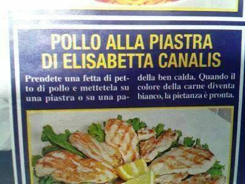

Pollo alla piastra di Elisabetta Canalis

Descrizione:
Una ciabatta semplice, veloce e nutriente, sopratutto se praticate bodybuilding
Ingredienti:
Procedimento:
- Prendete una fetta di petto di pollo e mettetela su una piastra o padella ben calda
- Quando la carne diventa bianca, la pietanza è pronta
- Aggiungete sale a piacere